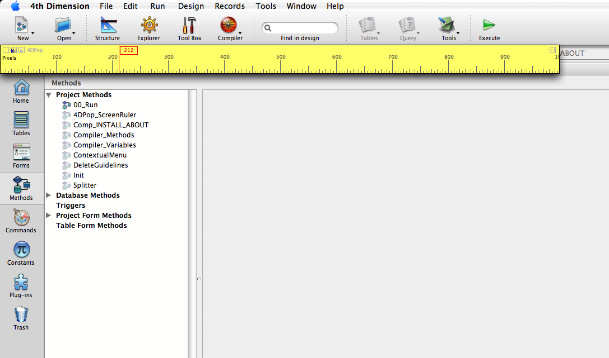
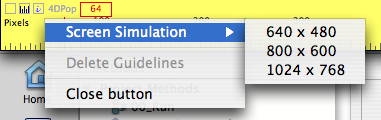

|
|
||||
4DPOP Ruler is a component that allows posting a rule on the screen to do precise measures, in application mode, and take care for your interface.
|
|
||||
4DPOP Ruler is a component that allows posting a rule on the screen to do precise measures, in application mode, and take care for your interface.
Place the folder "4DPop_Rulers.4dbase" or an alias of the folder into the "Components" folder; near the structure file of your database.

To display the rulers, execute the method "4DPop_ScreenRuler"
If you use the component "4DPop", the ruler tool appears in the palette, just clic on it to display the ruler.

By default the horizontal ruler of 100 pixels height is displayed right under the menu bar or tool bar.
| Close the ruler | |
| Switch between horizontal and vertical ruler | |
| Display the help page | |
| resize the ruler | |
| + Opt/Alt automatic resize depending of the screen size |
To move the ruler, clic into an empty zone
You can create a location line, while clicking in an empty zone of the ruler while pressing Option on Macintosh or Alt on PC.
The location line is vertical if the rule is horizontal and reverse.
The location lines are preserved at the time you switch the ruler vertical/horizontal. They are all eliminated at the rule closing.
The number of line of location created is not limited.
While clicking on a location line, you can move it, keep pressed Option/Alt line is deleted.
Clicking on the Label "4DPop" displays the action menu :
The line "Simulate a screen " allows to place vertical and horizontal location lines to simulate a virtual screen size chosen from the 3 current sizes offered.
The line "Delete location lines" allows to delete all lines chosen at once.
This component is given in compiled version, but you will find the source code in the folder "Sources" inside the component folder.